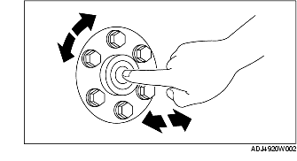

PILOT BEARING INSPECTION
B3E051011501W01
1. Without removing the pilot bearing, turn the bearing while applying force in the axial direction.
• If there is any malfunction, replace the pilot bearing.
